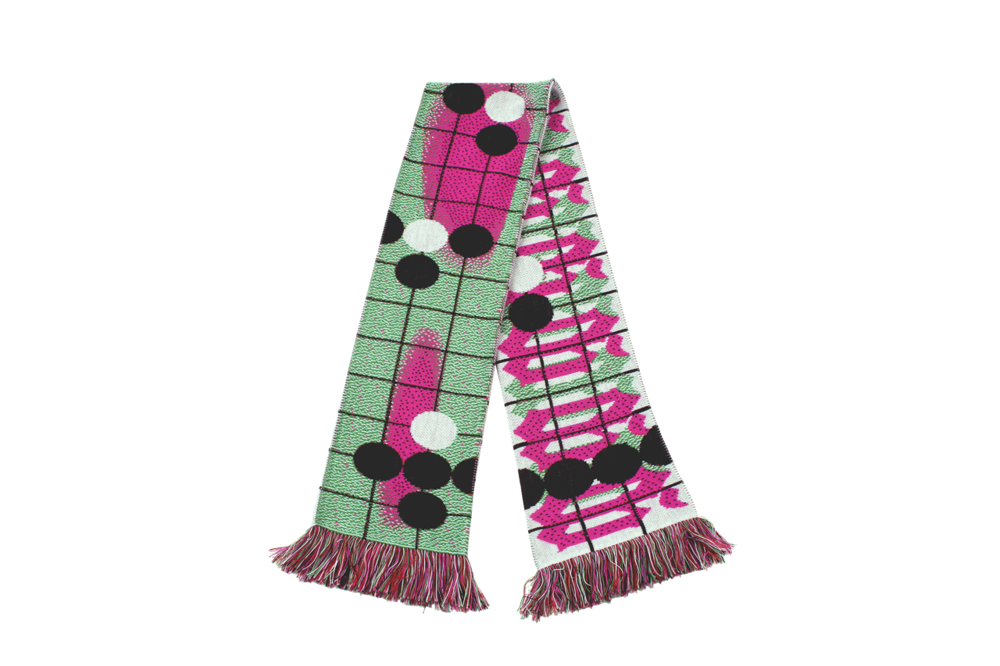
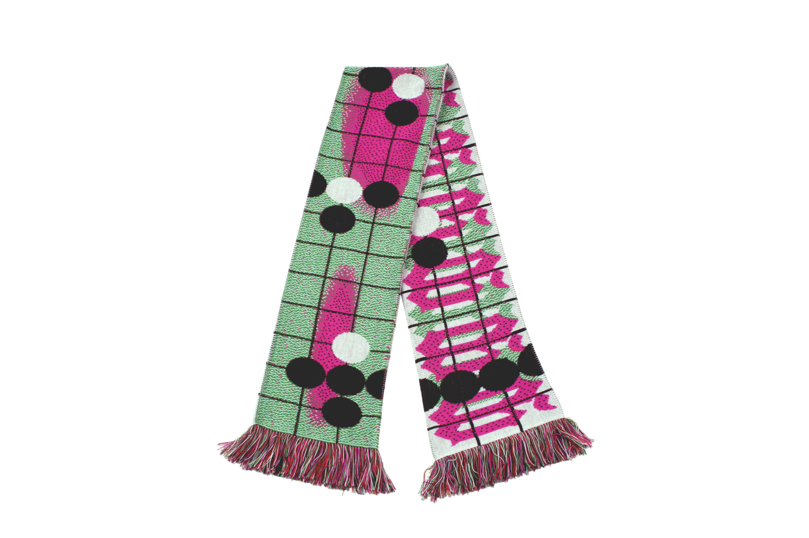
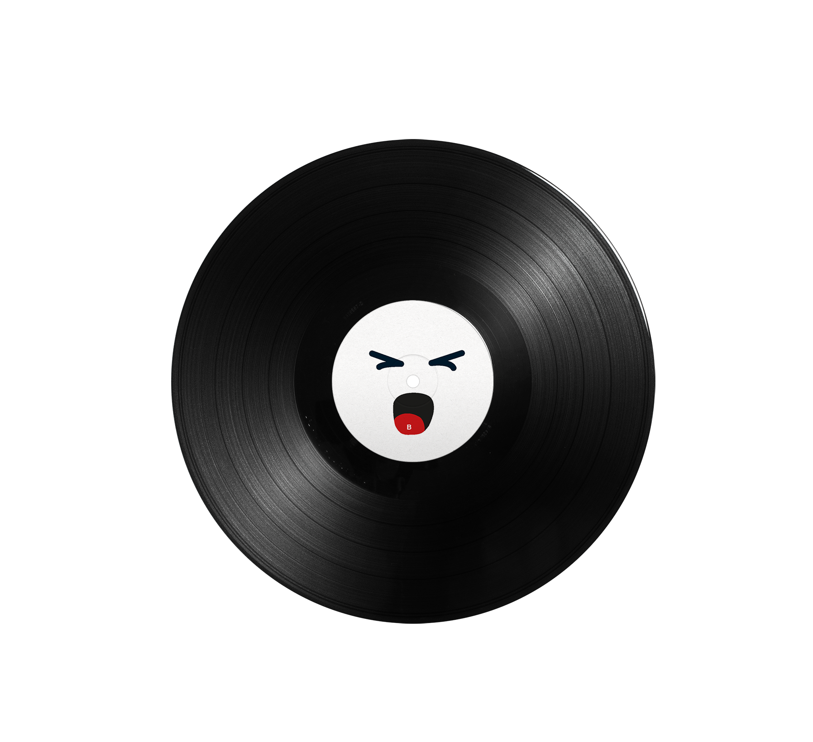
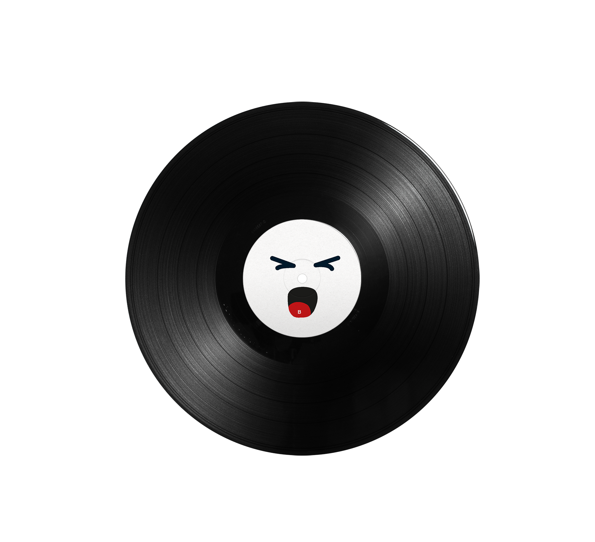

In my third year at Luca School of Arts, I had the opportunity to participate in an Erasmus exchange
in Lyon, where I studied at ENSBA (École Nationale Supérieure des Beaux-Arts). During that semester,
we were given an interesting assignment: to create a custom font inspired by the typefaces of old
newspapers. We were provided with a selection to choose from, and I decided to work with the font
from Le Meridional.
This was my first experience designing a typeface, which made the project particularly exciting for
me. Upon returning to Belgium, I continued to refine and develop the font, making the entire process
a rewarding journey. For the final presentation, I decided to showcase the font in a
newspaper format, incorporating various headlines, paying homage to the historical roots of
the original typeface.


In my second year at Luca School of Arts, we were assigned to create posters based on a story that had both a book and a film adaptation. I chose "Fahrenheit 451", a story about censorship. To emphasize this theme in my posters, I drew inspiration from both the movie and the book, incorporating visual elements directly from the film and scans from the book itself. This combination allowed me to creatively explore the concept of censorship, blending imagery and text to reflect the suppression of information central to the story.
In my second year at Luca School of Arts, we were assigned to create a concept for a fictional radio station and design a poster to represent it. I came up with "Radio Scream", a station dedicated entirely to iconic screams from movies. For the poster, I featured several films known for their unforgettable scream scenes. Each title was accompanied by details such as the length of the scream and the name of the specific scene, emphasizing the power and drama of these moments.

This was one of my first real-world assignments! :) Chiro Hekeko holds an annual contest for the
graphic design of their festival, and I decided to submit my design—and ended up winning.
Hekeko stands for Heverlee, Kessel-Lo, and Korbeek-Lo, so I incorporated the geographical borders of
these areas into the poster and added a 3D effect to make them stand out. Once I had the concept in
place, I experimented with the layout, and that's how the final design came together!
Last year, I began studying Multimedia and Creative Technology at Erasmushogeschool Brussel. As part of a course called Interactive Motion, we learned to use TouchDesigner. The course culminated in two assignments, one of which involved creating a project inspired by another artist’s work. I chose Daydream by Valentine Maurice, an artist known for exploring the effects of light on mental health. In this particular project, she experiments with the interplay between light and water. For my project, I focused on recreating this interaction, experimenting with recreating light and water in TouchDesigner.

 

In my second year at Luca School of Arts, we were tasked with designing a football scarf using a
limited set of materials, themed around a sport of our choice. After researching the materials, I
decided to create a scarf inspired by the board game Go.
The contrast between the grid of the board and the round playing stones influenced my design. I drew
further inspiration from a computer version of Go that highlights the best moves with gradient
colors. I used these gradient colors throughout the rest of the scarf.
These colors allowed key elements—such as the repeating "gogogogo" on the back and the white
stone-like dots on the front—to stand out more clearly.
 

This assignment was from my first year at Luca School of Arts, where we were tasked with designing
a vinyl cover for one of the albums from a provided list. I chose "Music for Commercials" by Yasuaki
Shimizu, an album originally created for Japanese TV commercials.
For inspiration, I delved into vintage Japanese commercials, which are known for their vibrant and
colourful aesthetic. During my research, I also discovered tiny smiley faces in
Japanese signage, which was a fun addition to my design. Overall, designing this
vinyl was a fun experience, full of creativity and exploration.
In my third year at Luca School of Arts, we kicked off the year with a major assignment: designing a book on graphic design. We were provided with interviews and essays from graphic designers to include in our book. For inspiration, we had to base our design on an existing book we liked. While browsing a thrift store, I came across a book about antiques. Its unique design featured large text and cut-out elements that intrigued me. I decided to incorporate these features into my project, experimenting with the interplay between bold typography and cut-out imagery. The result was a book design that combined these elements in a creative and engaging way.
During my Erasmus exchange at ENSBA in Lyon, we were given several open-ended assignments, one of which was to create a publication on any topic of our choice. Fascinated by the world of collectors, I decided to focus my project on this subject. I conducted interviews with various collectors and photographed them with their collections. To highlight both the collectors and their collections, I opted for a minimalist design. This approach ensures that the images and the collectors' stories take center stage, allowing their passion and personal connection to shine through.
Last year, I started a new study, diving deeper into various programs and techniques. This clip
is an example of one of my first experiments with After Effects. It's a lyric video where I
applied the new skills I acquired throughout the year.
The song featured is "My Little Tony" by Bar Italia. Inspired by their album cover, which showcases
stretched text, a color palette of gray, black, and yellow, and a grainy texture, I incorporated
these elements into the video to create a cohesive and visually engaging piece.
Last year, I began studying Multimedia and Creative Technology at Erasmushogeschool Brussel. In the
Interactive Motion course, we explored TouchDesigner and were tasked with two significant
assignments. For the second assignment, we created an interactive digital installation that delved
into human interaction with technology.
I wanted to challenge the notion that technology is a black-and-white world. Instead, I aimed to
demonstrate its complexity by allowing viewers to influence what they see through hand and head
movements. This clip showcases the interactive visual I developed to explore this concept.